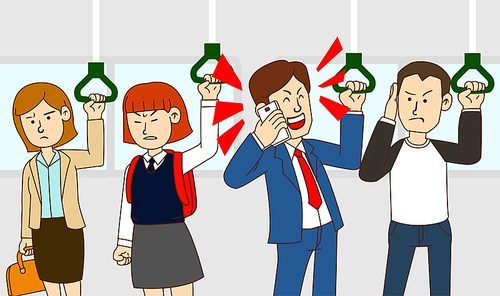

STOP 01
Train and Station Manners
Line up at the marks on the platform and let people get off first. Do not block the door. Hold a big backpack in front or put it on the shelf.
Priority seats are for older people, pregnant women, people with disabilities, and people with small children.
Tip: Rush hour is about 7:30 to 9:00 in the morning. Avoid it if you can.